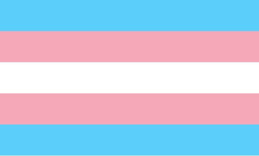

The Transphobia of "Bend her" from Futurama
To be completely honest? Matt Groening surprised me with this episode considering his spotless record of inclusivity, like Waylon Smithers portrayal from the Simpsons and how most of his minority characters aren’t stereotyped to hell and back and are strong characters on their own! But, I guess humbleness has one exception with that being the “T” in the “LGBT”, and now we have one of the most terrible, transphobic episodes of a television show ever made, and it may have only worsened the already rampant transphobia at the time that still lingers today.

Bend-strogen
The episode begins with Bender doing his usual ego self-indulgence in trying to win some gold medals in the 3004 Olympic Games instead of watching his "friend" Hermes do limbo. But, unfortunately for the Narcacist; he can't compete with the male robots because they're all big and strong while he's just a Train whistle with limbs. So what does he do? He pretends to be a woman so he can beat the other girls in the female bending challenges. ...Why are there even female robots in the first place? They are ROBOTS. Robots shouldn't even NEED gender because they can't reproduce sexually (well they can later in the show but STILL.) and yet we just have to gender robots too like everything isn't already gendered enough, and then we have Bender promoting one of the STUPIDEST, UNREALISTIC STEREOTYPES IMAGINABLE. Bender socially transitions just so he can beat women in their sport because he can't be good at his own sport, WHICH IS A GENUINE THING TRANSPHOBES THINK TRANS PEOPLE TRANSITION FOR. This is just BEYOND stupid in every way, shape and form, if the people who made this episode (or well, transphobes in general) actually did any proper research they'd know that trans peoople transition because they were born as the wrong gender and use transitioning as a way to appear as the right gender, for others but mostly themselves. But NOOOOOOOOOO apppearently trans people, more specifically transfems (Trans women) transition because they're so full of testostorone and can't handle losing so they'll literally switch genders so they can beat other people and feel good about their fragile masculinity... BECAUSE PEOPLE WHO VIEW THEMSELF AS FEMALE ARE THE MOST MANLY """"""""MEN""""""""" ON THE PLANET. (I'm being sarcastic.) Back to the story, Bender beats everyone on the womens team, like literally EVERYONE. He gets all 5 medals, WHICH IS ALSO SEXIST BECAUSE IT ALSO PAINTS ALL WOMEN BEING WEAKER THAN MEN. MY GOD YOU INSULTED BOTH CIS AND TRANS WOMEN IN ONE EPISODE. JESUS CHRIST. But then... all the female robots have to go for a "Gender test", which is... looking to see if the robot women have the correct "equipment" or not, and deeming anyone with the other "tools" a man and kicking them out. OH GODDAMNIT.

Rage with a Side of Eggs
Transmedicalism is simply the idea that any trans person who doesn't feel gender dysphoriah or wants to transition, aren't really trans... which is both stupid and what this episode is promoting. I MEAN CMON ARE YOU KIDDING ME, FIRST YOU HAVE THE "Transfems only transition for sports reasons" THING AND THE "Women are weaker than men" THING AND NOW THIS??? WHO WROTE THIS PILE OF ABOSLUTE [Redacted]!?!?!? Anyways, bender transitions and then starts dating Calculon (a male, famous actor robot).. for his money. AGAIN, AGAIN WITH THE "transition for selfish goals" STEREOTYPE ARE YOU KIDDING ME. THEN TO MAKE IT EVEN WORSE BENDER EVENTUALLY ACTUALLY DOES FALL FOR CALCULON BECAUSE OF HIS "female emotions". BEING FEMALE DOESN'T JUST MAKE YOU LIKE MEN! THIS IS BOTH TRANSPHOBIC, HOMOPHOBIC AND SEXIST IN ONE UGLY FAT SWEATY PACKAGE. MY G O D. THIS EPISODE HAS SO FAR OFFENDED EVERYONE EXCEPT FOR STRAIGHT CIS MEN, BECAUSE OF COURSE THERES NOTHING OFFENSIVE TO MEN IN THIS EPISODE. MY [Redacted]ING GOD. The rest of the episode is just normal wacky futurama but the first 99% of the episode was just one big slop of Transphobic, Homophobic and sexist nonsense. And y'know whats WORSE? I'm pretty sure this episode has lead to the harmful stereotypes being passed around! Want an example? MY MOTHER. SHE BELIEVES THAT TRANS PEOPLE TRANSITION FOR UNFAIR ADVANTAGES IN SPORTS, AND SHE WAS A FAN OF FUTURAMA TOO! SHE PROBABLY SAW THIS ONE EPISODE AND THEN BASED ALL OF HER VIEWS ON IT, LEADING FOR HER TO UTTERLY HATE TRANS PEOPLE AND TREATING THEM LIKE THEY'RE MONSTERS. I HAVE TRANS FRIENDS AND THEY'RE SOME OF THE NICEST PEOPLE IN MY LIFE, THEY WOULDN'T TRANSITION JUST SO THEY CAN GET AN UNFAIR ADVANTAGE IN ANYTHING, THEY WOULD DO IT BECAUSE EVERY MOMENT OF THEIR LIFE IS MISRABLE BECAUSE THEY'RE STUCK IN A BODY THAT ISN'T THERE, BUT FOR SOME REASON PEOPLE JUST WANT TO ADD ON TO THEIR MISERY BY TREATING THEM AS IF THEY WERE MONSTERS. The entire world is against them and I (partially) blame this episode. Thanks Matt Groening, thank you for making so many people feel unsafe to leave their homes, thank you for making so many people being afraid of being assaulted in public bathrooms because they can't afford Bottom/Top surgery, thank you for making the world a darker place than it already is for these poor, vulrenable people. Thank you for that. (I'm STILL being sarcastic.)
The End
Ok, thats pretty much it for my rant. Thank you for reading it all. Things like this just invokes a primal rage within me and I just wanted to express that. Trans people (especially trans kids) need our support more than ever in this day and age, and if there was any possible way you could help them, then please try to, for me?
TRANS RIGHTS FOREVER!!!!!!!
